「动画系统」由多个动画工具和编辑器构成，其将基于骨架的变形与基于变形的顶点变形相结合，从而构建出复杂的动画。该系统可以用于播放和混合预先准备好的动画序列让基本玩家运动显得更加真实，创建自定义特殊动作，如伸缩台阶和墙壁（使用动画蒙太奇），通过变形目标应用伤害效果或面部表情，使用骨架控制直接控制骨骼变形，或创建基于逻辑的 状态机 来确定角色在指定情境下应该使用哪个动画。——虚幻官方文档
#骨骼与骨架
在虚幻引擎中，骨架用于定义角色中的骨骼，同时关联动画数据，从而驱动动画。
骨骼是骨架的基本组成单元，并在骨架中以树状结构组织。根骨骼是骨架层级结构的根节点。除了根骨骼外，每个骨骼都有一个父骨骼。此外，每个骨骼还有用于唯一标识符的名称以及用于确定在空间中状态的变换信息。
变换信息指的是位置、旋转、缩放这些信息。如果每个骨骼记录的变换信息都基于世界坐标，那么角色在运动时几乎所有骨骼都需要进行更新。可以将父骨骼的局部坐标系作为参照，只记录相对变换，从而降低开销。
在 C++ 中，骨架被定义为类 USkeleton。骨骼完整的信息存放在 FReferenceSkeleton 类型的成员变量 ReferenceSkeleton 中。该变量的部分内容如下
ReferenceSkeletonstruct FMeshBoneInfo { // Bone's name. FName Name; // INDEX_NONE if this is the root bone. int32 ParentIndex; } struct FReferenceSkeleton { ... //RAW BONES: Bones that exist in the original asset /** Reference bone related info to be serialized **/ TArray<FMeshBoneInfo> RawRefBoneInfo; /** Reference bone transform **/ TArray<FTransform> RawRefBonePose; //FINAL BONES: Bones for this skeleton including user added virtual bones /** Reference bone related info to be serialized **/ TArray<FMeshBoneInfo> FinalRefBoneInfo; /** Reference bone transform **/ TArray<FTransform> FinalRefBonePose; /** TMap to look up bone index from bone name. */ TMap<FName, int32> RawNameToIndexMap; TMap<FName, int32> FinalNameToIndexMap; ... }
每个骨骼的信息用 FMeshBoneInfo 结构体描述，有名称以及父骨骼在 TArray 中的索引。此外 FReferenceSkeleton 中还有骨骼的变换信息以及名称到数组索引的映射。
#骨架网格体
骨架网格体是设置了骨架的模型资源，本质上是将几何数据、骨架信息、蒙皮权重进行结合得到的产物。其中，几何数据指的是模型顶点、三角形表面、UV 坐标、法线、切线等用于图像渲染的数据。在这里，我们只关注顶点这一概念。
而蒙皮权重是骨架网格体中最重要的概念之一。在骨架网格体中，每根骨骼都与骨架网格体的一部分顶点相关联。当骨骼移动或旋转时，与其关联的顶点也会随之移动，从而实现模型的变形。其中，蒙皮权重定义了每个骨骼应用变换时对每个顶点的影响程度。权重越高，顶点受该骨骼的影响越大。
#动画模式
每个 Character 是默认带有 SkeletalMeshComponent 的 Pawn，其中 SkeletalMeshComponent 下面有一个名为「Animation Mode」的设置，其中比较主流的是「Use Animation Asset」和「Use Animation Blueprint」两种选项。
#动画序列
动画序列是最简单的 Animation Asset。在任一时间点，一个骨架网格体中所有骨骼变换信息的集合又被称为姿势。动画序列包含了一系列带有姿势信息的关键帧，通过播放序列中的这些关键帧，并再将它们互相混合（比如插值混合），使得骨架网格体可以产生平滑的动画效果。
每个动画序列专门针对一个特定骨架，且只能在该骨架上播放。换言之，对于不同的骨架网格体，只要使用的骨架相同，那么就可以共享动画序列。
#动画蓝图
动画蓝图用于管理和控制 Character 的动画行为，包含以下两个主要部分。
事件图表可以构建基于蓝图的逻辑，用于定义节点的属性和包含其他图表区域信息的变量。
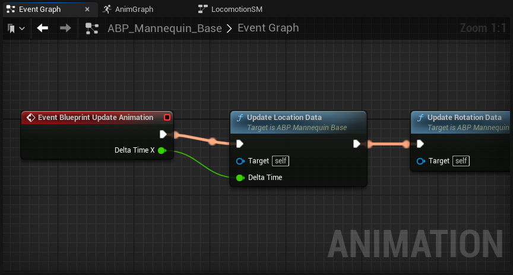动画图表通常为当前帧评估骨架网格体的最终姿势。也就意味着动画图表每一帧都会执行。
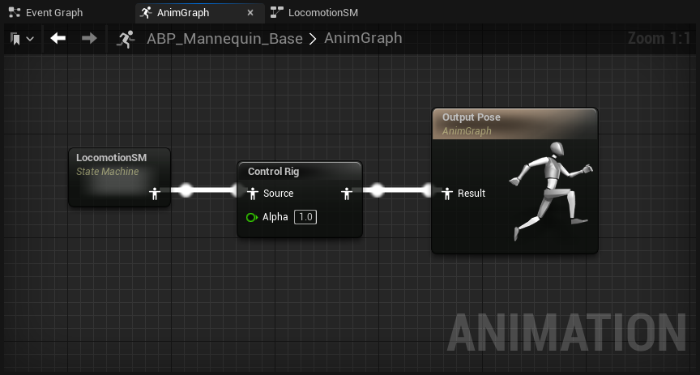在动画图表中还可以利用状态机输出最终姿势。其功能是将不同的动画作为一系列状态，然后按照转换规则管理这些状态，转换规则可控制从一个状态混合到另一个状态，通常用于角色的移动逻辑。
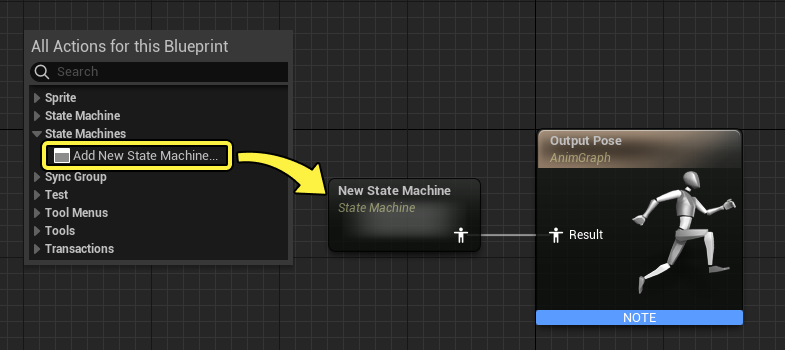 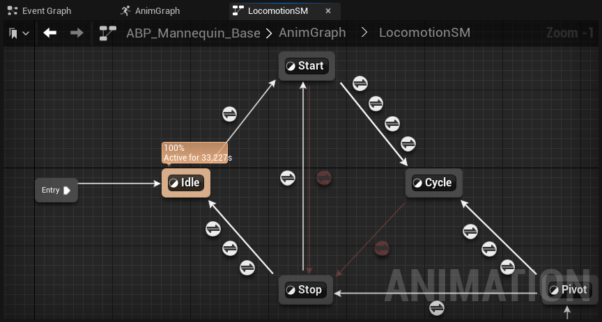#动画混合
混合是指将两个或多个值或状态组合在一起的过程，以产生一个平滑的过渡或最终结果。而动画混合，指的就是多个动画序列里的每一条变换信息相互之间基于权重的运算过程，本质上是对每个时间点的姿势进行混合。
通过动画混合，我们能够平滑地过渡和组合不同的动画姿势，从而创造出更自然的角色动画。比如根据角色的速度和方向，动态地在行走和跑步之间平滑过渡；或者将换弹与跑步相混合，得到一个奔跑时换弹的融合动作。
#变换信息运算方式
变换信息的运算有以下两种方式：覆写和叠加。
覆写是直接将目标变换设置为源变换 * 权重。
Overrite Transformtemplate<> FORCEINLINE void BlendTransform<ETransformBlendMode::Overwrite>( const FTransform& Source, FTransform& Dest, const float BlendWeight ) { const ScalarRegister VBlendWeight(BlendWeight); Dest = Source * VBlendWeight; }
而叠加是在目标变换的基础上加上源变换 * 权重。
Accumulate Transformtemplate<> FORCEINLINE void BlendTransform<ETransformBlendMode::Accumulate>( const FTransform& Source, FTransform& Dest, const float BlendWeight ) { const ScalarRegister VBlendWeight(BlendWeight); Dest.AccumulateWithShortestRotation(Source, VBlendWeight); }
#姿势混合
姿势混合将两个或多个动画的姿势组合在一起，以创建新的姿势，从而得到混合后的新的动画。
虚幻引擎中的动画蓝图提供了以下几种基于混合节点的姿势混合方式：
-
叠加混合。对应于动画蓝图中的「Apply Additive」/「Apply Mesh Space Additive」节点，根据权重值 Alpha 在 Base 姿势上叠加 Additive 姿势，即
Dest = Additive + Base * Alpha。其中，Additive 姿势记录的是相对于参考姿势的偏移量，而不是绝对姿势。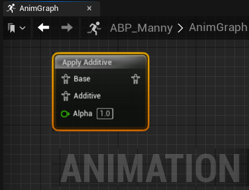 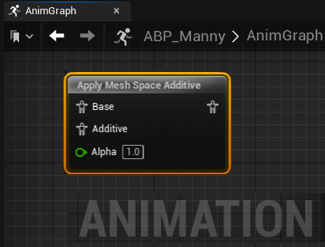 -
线性插值混合。对应于动画蓝图中的「Blend」节点，根据权重值 Alpha 简单地混合两个输入姿势 A 和 B，即
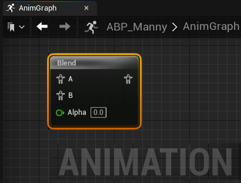Dest = A * (1-Alpha) + B * Alpha。 -
骨骼分层混合。对应于动画蓝图中的「Layered blend per bone」节点，仅针对选中的骨骼将 Base 与 Blend 进行线性插值混合。这些骨骼都有单独的「Bone Blend Weights」，并乘上「Blend Weights」作为最终权重。
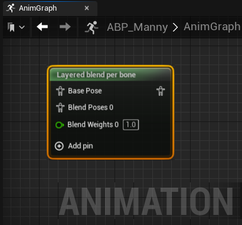节点有以下两种混合模式：
-
Branch Filter。需在「层设置」->「分支过滤器」中指定骨骼名称（以 bone 为例）。当「Blend Depth」参数为 0/1 时，bone 所在整条骨骼链的「Bone Blend Weights」均为 1；参数为 N(N>=2) 时，从 bone 开始「Bone Blend Weights」是 1/N, 2/N, …, 1, 1…；参数为 -1 时，整条骨骼链的「Bone Blend Weights」均为 0，即完全使用「Base Pose」。
-
Blend Mask。可以在骨骼网格体的「骨骼树」->「选项」->「Add Blend Mask」自定义一个「Blend Mask Profile」配置项，该配置为每个骨骼单独定义「Bone Blend Weights」，从而精确控制哪些骨骼参与混合，哪些骨骼不参与混合。
-
#混合空间
混合空间能够通过一个或多个输入参数在多个动画序列之间平滑地混合。这些参数通常是角色的属性，例如速度、方向、攻击角度等。
混合空间由一系列采样点组成。每个采样点对应于一个特定的输入参数值，并指定要播放的动画序列。当输入参数的值发生变化时，混合空间会根据当前输入参数值，在相邻的采样点之间进行混合。
比如在混合空间 1D 中，设置「速度」为参数，在数值 0 处设置动画序列「Idle」的采样点，在数值 x1 处设置动画序列「Walk」的采样点，在数值 x2 处设置动画序列「Run」的采样点。那么在速度为 0~x1 时，混合空间会采用线性插值的方式，驱动网格体的姿势从 Idle 平滑过渡到 Walk。在速度为 x1~x2 时同理。
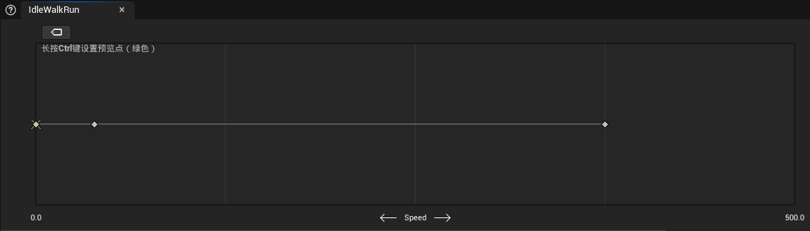而在混合空间 2D 中，则会采用双线性插值的方式来混合。
虽然都是进行「混合」，但与混合节点不同，混合空间更像是“参数驱动的过渡工具”，确保动画连续性，
#动画蒙太奇
#实现原理
状态机将循环播放角色当前所处状态的动画序列，是持续性的，但这些动画序列必须预先静态绑定到每个状态中，无法在运行时通过参数动态指定不同的动画。当我们想实现「触发某些条件播放一次动画」这一功能时，如果使用状态机，则必须设置一个新状态，随着动画逻辑的增加，状态网络复杂性提升，得不偿失。
蒙太奇。所有 Slot 由一个全局变量「Anim Slot Manager」管理。下面的例子中，Slot 名为「DefaultGroup.UpperBody」，其中「DefaultGroup」是插槽组，一个蒙太奇中所有的 Slot 必须是同一组的。
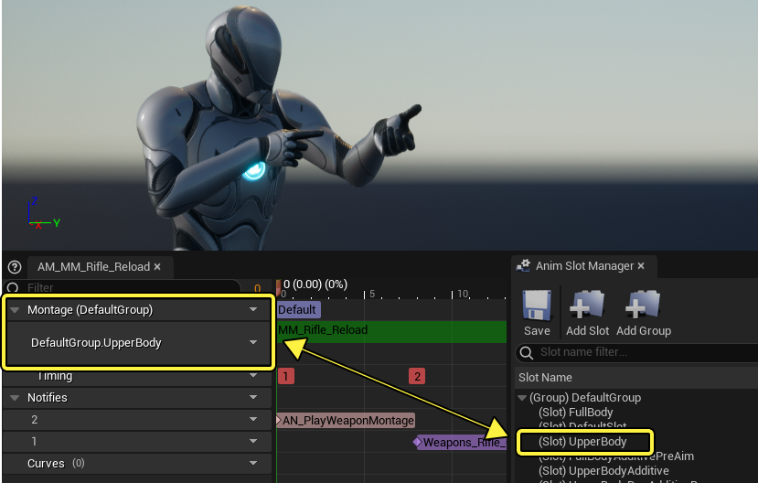我们可以利用动画图表表中的同名插槽节点，便可在播放蒙太奇时覆盖之前节点的输出姿势。在下面的例子中，「FullBody」节点置于状态机后，以覆盖的形式插入动画，用于全身的互动动作或者表情动作；「UpperBody」搭配「Layered blend per bone」节点，实现按上半身骨骼的姿势混合。
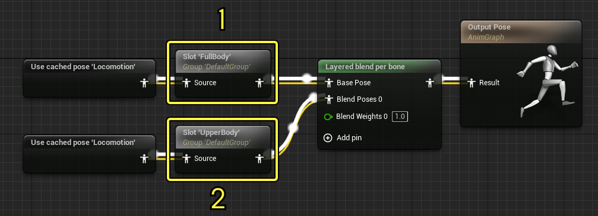Slot Node 相当于一个过滤器，当且仅当执行 Play Montage 操作时，对应的 Slot Node 会被激活，从而覆盖前面的输出；反之，Slot Node 会直接将 Source 设置为 Output。
#源码剖析
在 C++ 中，Play Montage 操作实际上会调用 UAnimInstance::Montage_Play() 方法，并进一步走到 UAnimInstance::Montage_PlayInternal() 中。如果传入参数 bStopAllMontages 为 true（默认值），那么会终止第一个 Slot 所在 Group 内的其他蒙太奇。接下来，将执行以下几个比较重要的步骤：
-
首先是创建了一个
FAnimMontageInstance类型的蒙太奇实例； -
然后根据
BlendInSettings设置蒙太奇混入的权重以及时间等配置数据； -
并将该蒙太奇实例加入
MontageInstances变量中，表示当前活跃的蒙太奇。
UAnimInstance::Montage_PlayInternal(...)
{
...
FAnimMontageInstance* NewInstance = new FAnimMontageInstance(this);
check(NewInstance);
const float MontageLength = MontageToPlay->GetPlayLength();
NewInstance->Initialize(MontageToPlay);
NewInstance->Play(InPlayRate, BlendInSettings);
NewInstance->SetPosition(FMath::Clamp(InTimeToStartMontageAt, 0.f, MontageLength));
MontageInstances.Add(NewInstance);
ActiveMontagesMap.Add(MontageToPlay, NewInstance);
...
}主线程的相关内容就到此为止了，接下来是 Tick 时间。在每个 Tick 都会执行 USkinnedMeshComponent::TickComponent() 方法，然后一层层调用到 UAnimInstance::UpdateAnimation() 方法。
UAnimInstance::UpdateAnimation(...)
{
...
{
UpdateMontage(DeltaSeconds);
// now we know all montage has advanced
// time to test sync groups
UpdateMontageSyncGroup();
// Update montage eval data, to be used by AnimGraph Update and Evaluate phases.
UpdateMontageEvaluationData();
}
...
}-
UpdateMontage()对蒙太奇进行混合权重的更新和时间轴的推进； -
UpdateMontageSyncGroup()略； -
UpdateMontageEvaluationData()会将MontageInstances中所有活跃的蒙太奇相关数据加入到FAnimInstanceProxy::MontageEvaluationData里。
每个 Tick 还会在上面的方法结束后调用 FAnimNode_Slot::Update_AnyThread() 和 FAnimNode_Slot::Evaluate_AnyThread() 方法，其中 FAnimNode_Slot 就是对应的 Slot Node。前者计算出当前混合权重，后者从 FAnimInstanceProxy::MontageEvaluationData 中获取拥有相同 Slot Name 的活跃蒙太奇，最后结合 Source 以及相关权重计算出 Output。
事实上，如果 bStopAllMontages 为 false，那么实际上会和所有活跃的蒙太奇一起混合。
播放/结束蒙太奇时，前后一帧不可能与状态机的输出完全一致，如果直接修改则会很突兀，所以需要用 BlendIn 和 BlendOut 作首尾的混合，因此需要计算权重。
#动画曲线
动画曲线是一种基于时间轴的关键帧动画控制机制，本质上是 float 曲线，x 轴为时间轴，与对应的动画序列等长；y 轴为自定义参数，每一帧都有对应的数值。在动画蓝图中，可以通过「Get Curve Value」节点获取当前时间帧对应的曲线值，默认为 0（即使该动画序列中没有同名曲线，也返回 0）。
#曲线混合
当对多个动画序列进行混合时，会对同名曲线也进行混合，同时「Get Curve Value」获取的曲线值一定是若干曲线的混合结果值。
使用「Blend」节点进行混合时，「Get Curve Value」得到的曲线值的计算逻辑为 CurveA * (1-Alpha) + CurveB * Alpha，这与 Pose 的混合逻辑完全一致。
使用「Layered blend per bone」节点进行混合时，则因「曲线混合选项」而异，具体如下表所示，假设输入姿势「Blend Poses i」对应的曲线为 。
|选项|计算逻辑||
|:-😐:-😐
|Override|同名曲线中取最后一次出现的，即 最大的|
|Do Not Override|同名曲线中取第一次出现的，即 最小的|
|Blend by Weight||
|Normalize by Weight||
|Use Base Pose|取 Base Pose 对应曲线值|
|Use Max Value|取所有 Poses 对应曲线的最大值（不考虑不存在）|
|Use Min Value|取所有 Poses 对应曲线的最小值（不考虑不存在）|
上述 BlendWeights 会被 clamp 到 (0, 1) 间。
#变形目标 Morph Targets
Morph Targets 本质上是一个变量，通过修改该变量的值，能够改变模型的顶点位置，从而实现形状的动态变化，常用于角色面部表情、物体形变等场景。这玩意一般是美术创建好，和 SkeletalMesh 一起导入 UE 中的，可以在骨骼网格体页面的「变形目标预览器」处查看。此时，应用于该骨骼网格体的动画序列可以直接创建已知变形目标变量的曲线。
#动画通知
动画通知可以在动画播放到某个时间点的时候发送一次通知（Anim Notify），或持续发送通知直到结束点（Anim Notify State）。本质上是绑定了**动画通知类（Anim Notify Class）**的 callback，当触发通知后会调用类内部的 Notify() 函数。